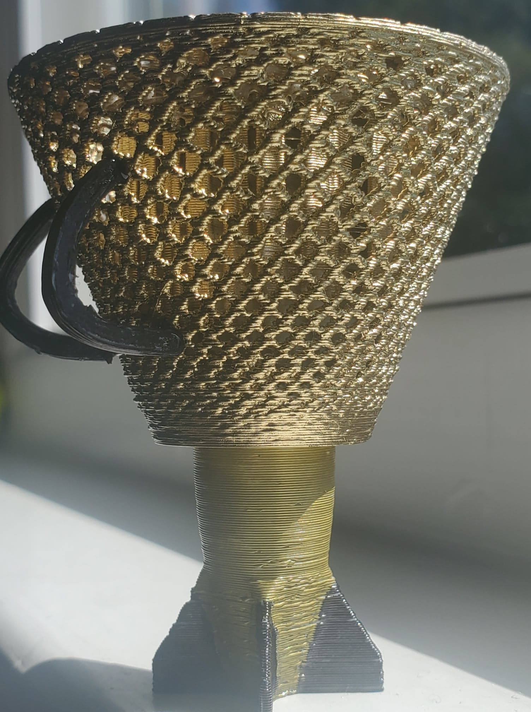
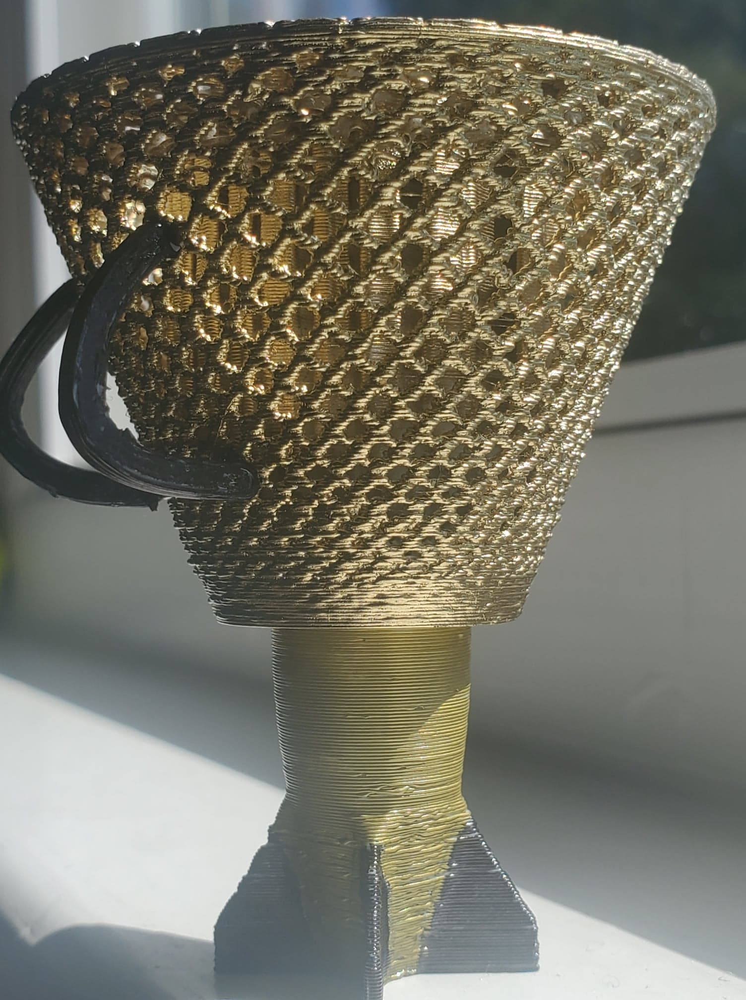

Back Story:
The "Dhoko 2.0" is an invention that came after years and years of R&D. Nepal being a landlock country surrounded by steep mountains, walkind and climbing has always been difficult. But now with the help of Nepal government, we created an equipment that is not only helpful to carry loads but also convinent to climb those mountains. Presenting "DHOKO 2.0". Made out of the rarest material found on planet earth "BAMBOO", it is very strong and durable. This is invention helps people to do their daily activity much efficently and also helps climbers to reach the submit quicker.
 
